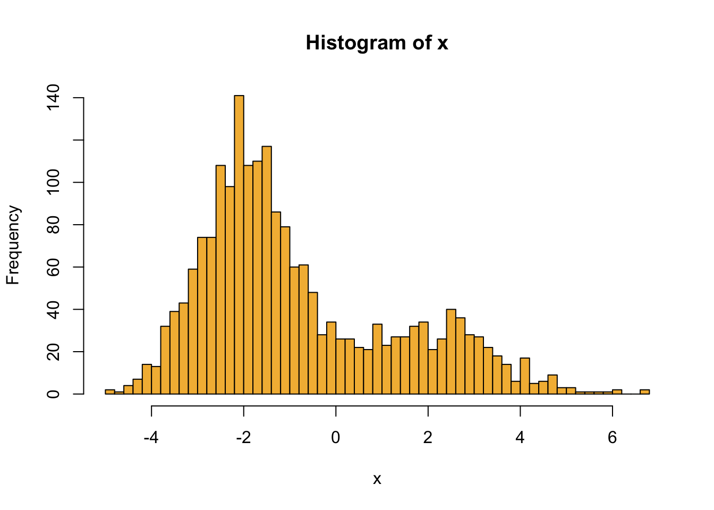
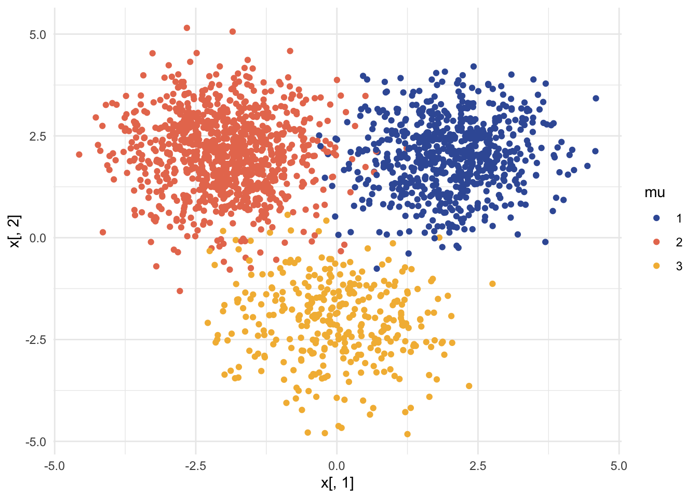

Topic 5 Application 1: Gaussian Mixture Model
5.1 Why using GMMs?
Suppose we have a dataset with 2 features. When you plot your dataset, it might look like this:
Figure 5.1: A dataset with 2 clusters, made by Maël Fabien
From the above plot, there are 2 clusters. Thus, we are aiming to solve two tasks:
Clustering of the data
Modeling of the distribution for the data and the corresponding parameters.
Usually, when doing clustering, people will think of k-means. But, in fact, K-means is just a special case for Gaussian Mixture Models (GMMs) when using a specific EM algorithm. The following plot shows some differences between K-means and GMMs for clustering. In general, for k-means, the clusters are defined by the data means whereas GMM, clusters are defined by data means and variance modeled as Gaussian (aka Normal distribution).
Figure 5.2: K-Means vs. GMMs for clustering, made by Maël Fabien
Thus, when using 2 Gaussians, we want to find:
the mean and covariance of the first Gaussian
the mean and covariance of the second Gaussian
the weight of each Gaussian component
5.2 Train GMM using MLE
When training a GMM, we want to identify a set of parameters that characterize our GMM.
\[ \theta = (w_k, \mu_k, \Sigma_k), k = 1,2,3,\dots, M \]
Similar to solve parameters in single Gaussian model using MLE, we can take the Score function \(\frac {dL}{d\theta}ln L(\theta)\) using log-likelihood and set it equal to 0 again, where \(\prod^N_{i=1}\) is all observations, \(\sum^M_{k=1}\) is all components (number of clusters), \(w_k\) is component weights, and \(N(x_i,\mu_k, \sigma^2_k)\) are Gussians:
\[ \begin{aligned} L(\theta \mid X_1,\dots, X_n) & = \prod ^N_{i=1} \sum^M_{k=1}w_k\;N(x_i,\mu_k, \sigma^2_k) \\ ln L(\theta) = \log L(\theta \mid X_1,\dots, X_n ) &= \sum^N_{i=1} \log (\sum^M_{k=1} w_k \;N(x_i,\mu_k, \sigma^2_k)) \\ \frac {dL}{d\theta}ln L(\theta) &\stackrel{Set}{= }0 \end{aligned} \]
Unfortunately, the typical MLE approach reaches its limits since the above expression of Score function is analytically unsolvable. Thus, EM algorithm provides ways to overcome this unsolvable expression by maximizing the likelihood for the parameter of the interest and iterating till we have the desired estimate within the error range.
5.3 Train simple GMM example using EM
- Goal: Find which Gaussian component each observed data belongs to (latent variable \(Z\)), which can help we to identify each Gaussian parameters.
5.3.1 Set up
Suppose we want to have a data set of 2 clusters in 1 dimension to simplified the example so \(K=2\) in \(1D\).
- Assumptions: We assume that we have observed variable \(X\) and some latent variable \(Z\) which decides which cluster the data points belong to. We also assume that the data given the cluster \(J\) has a Normal distributes with mean \(\mu_j\) and variance \(\sigma^2_j\) corresponding to that cluster.
\[ X \mid Z = J \sim N(\mu_j, \sigma^2_j) \]
- Unknown parameters: In this case, we don’t know means \(\mu\) and variances \(\sigma\) for each clusters, and the probability of being in one of the 2 clusters \(p\). Since we only have 2 clusters, the probability of being in the other cluster is the complement probability of \(p\), or \((1-p)\).
\[ \theta = (p,\mu_0,\mu_1,\sigma_0,\sigma_1) \]
5.3.2 EM steps (Two-key-step version)
Start with random guess for \(\theta\)
E step (finding the Q-function): \(Q(\theta \mid \theta^t) = E_{Z|X,\theta^m} [\log{p(x, z \mid \theta)}]\)
For a single observation: \[ \begin{aligned} p(X, Z\mid \theta) & = p(x\mid z, \theta)\;p(z\mid\theta) \\ &= \left( \frac1{\sqrt{2 \pi}\sigma_0}e^{-\frac{(x-\mu_0)^2}{2\sigma_0^2}}(1-p)\right)^{1-Z} \;\left( \frac1{\sqrt{2 \pi}\sigma_1}e^{-\frac{(x-\mu_1)^2}{2\sigma_1^2}}p\right)^{Z} \end{aligned} \] The above expression means that \(p(x, z\mid \theta)\) is equal to probability of the first cluster \(z=0\) times the probability of that \((1-p)\) and probability of the second cluster \(z=1\) times the probability of that \(p\).
For a single observation: Q function \[ \begin{align} Q(\theta \mid \theta^t) & = E_{Z\mid X,\theta^t} [\log{p(x,z\mid \theta)}] \\ & = (1-E(z)) \left(-\log{\sigma_0} - \frac{(x-\mu_0)^2}{x\sigma_0^2}+\log{(1-p)}+ const. \right) \\ & \quad \;+ E(z) \left(-\log{\sigma_1} - \frac{(x-\mu_1)^2}{x\sigma_1^2}+\log{p}+ const. \right) \end{align} \]
Find the Q-function by calculating the expected \(\log {p(x, z\mid \theta)}\) for a single observation.For n (iid) observation: Q function \[ \begin{aligned} Q(\theta \mid \theta^t) & = \sum _i(1-E(z_i)) \left(-\log{\sigma_0} - \frac{(x-\mu_0)^2}{x\sigma_0^2}+\log{(1-p)}+ const. \right) \\ & \quad \; + E(z_i) \left(-\log{\sigma_1} - \frac{(x-\mu_1)^2}{x\sigma_1^2}+\log{p}+ const. \right) \end{aligned} \]
Generalize the Q-function from the above single observation by taking the sum of \(z_i\).For n (iid) observation: \(E(z_i)\) \[ \begin{aligned} E(z_i) & = 0 \;\cdot \; P(z_i = 0 \mid x_i) + 1 \;\cdot \; P(z_i = 1 \mid x_i) = P(z_i = 1 \mid x_i) \\ & = \frac{P(x_i\mid z_i=1) P(z_i=1)}{P(x_i\mid z_i=1) P(z_i=1) + P(x_i\mid z_i=0) P(z_i=0)} \\ & = \frac{P(x_i\mid z_i=1)\;\cdot\; p}{P(x_i\mid z_i=1)\;\cdot\; p+ P(x_i\mid z_i=0)\;\cdot\; (1-p)} \end{aligned} \] Find the expected \(z_i\) in the above Q-function giving the known information of each observed \(x_i\).
M step (finding the new guess for \(\theta\) by maximizing the Q-function): \(\theta^{t+1} = \underset{\theta}{\operatorname{argmax}} \: Q(\theta \mid \theta^t)\) For the calculation below, we use weighed average, where the weights are the probability of being in the 1st “class”. \[ \begin{aligned} \frac {dQ}{d\mu_1} = \sum_i E(z_i)\left( \frac{x_i-\mu_1}{\sigma_1^2} \right) & \stackrel{Set}{= } 0 \\ \therefore \mu_1 & = \frac{\sum E(z_i)x_i}{\sum E(z_i)} \\ \text{Similarly } \mu_0 & = \frac{\sum E(z_i)x_i}{\sum E(z_i)}\\ \\ \frac {dQ}{d\sigma_1} = \sum_i E(z_i)\left( -\frac1{\sigma_1} +\frac{(x_i-\mu_1)^2}{\sigma_1^3} \right) & \stackrel{Set}{= } 0 \\ \therefore \sigma_1^2 & = \frac{\sum E(z_i)(x_i-\mu_1)^2}{\sum E(z_i)} \\ \text{Similarly } \sigma_0^2 & = \frac{\sum E(z_i)(x_i-\mu_0)^2}{\sum E(z_i)}\\ \\ \frac {dQ}{dp} = \sum_i \left(-\frac{1-E(z_i)}{1-p} + \frac{E(z_i)}{p} \right) & \stackrel{Set}{= } 0 \\ \therefore p & = \frac{\sum E(z_i)}{n} \\ \end{aligned} \]
Repeat until \(|\theta^{t+1} - \theta^m| < \epsilon\)
5.4 R code example
# EM: GMM
library(ks)
library(mvtnorm)
library(extraDistr)
library(ggplot2)
library(pracma)5.4.1 Simple example with 2 components in 1 dimension
## 1 dimension, 2 components
## sigma's, p are known; only estimate mu's
set.seed(247)
p = 0.3
n = 2000
# latent variable z
z = rbinom(n, 1, p)
# observed variables
mu1 = 2
sig1= sqrt(2)
mu0 = -2
sig0 = sqrt(1)
x = rnorm(n, mu1, sig1)*z + rnorm(n, mu0, sig0)*(1-z)
# plot data histogram
hist(x, breaks = 50, col = "#F3B941")
# E step
doE <- function(theta){
mu0 = theta[1]
mu1 = theta[2]
E = rep(NA, n)
for (i in 1:n){
a = dnorm(x[i], mean = mu1, sd = sig1)*p
b = dnorm(x[i], mean = mu0, sd = sig0)*(1-p)
E[i] = a/(a+b)
}
return(E)
}
# M step
doM <- function(E){
theta = rep(NA,2)
theta[1] = sum((1-E)*x) / sum(1-E)
theta[2] = sum(E*x) / sum(E)
return(theta)
}
EM <- function(theta, maxIter = 50, tol = 1e-5){
theta.t = theta
for (i in 1:maxIter){
E = doE(theta.t)
theta.t = doM(E)
cat("Interation: ", i, " pt: ", theta.t, "\n")
if (norm(theta.t - theta, type = "2") < tol)
break
theta = theta.t
}
return(theta.t)
}# Initial values
theta0 = rmvnorm(1, mean = c(0,0))
(theta.final = EM(theta0))## Interation: 1 pt: 1.300618 -2.042688
## Interation: 2 pt: 1.542635 -2.101853
## Interation: 3 pt: 1.701525 -2.066578
## Interation: 4 pt: 1.809297 -2.038246
## Interation: 5 pt: 1.878507 -2.019401
## Interation: 6 pt: 1.921065 -2.007542
## Interation: 7 pt: 1.946516 -2.000335
## Interation: 8 pt: 1.961482 -1.996054
## Interation: 9 pt: 1.970195 -1.993545
## Interation: 10 pt: 1.975238 -1.992088
## Interation: 11 pt: 1.978148 -1.991245
## Interation: 12 pt: 1.979822 -1.990759
## Interation: 13 pt: 1.980786 -1.99048
## Interation: 14 pt: 1.981339 -1.990319
## Interation: 15 pt: 1.981657 -1.990227
## Interation: 16 pt: 1.98184 -1.990174
## Interation: 17 pt: 1.981945 -1.990143
## Interation: 18 pt: 1.982005 -1.990126
## Interation: 19 pt: 1.98204 -1.990115
## Interation: 20 pt: 1.98206 -1.99011
## Interation: 21 pt: 1.982071 -1.990106
## Interation: 22 pt: 1.982078 -1.990104## [1] 1.982078 -1.990104## estimate p, mu's and sigma's 5.4.2 General case
We also include the code for a more general version of EM algorithm in GMM questions for simulation and hand-on further exploration. If you are curious about the calculation for the following general case, look at the second half of the youtube video.
## K * 2D Gaussians
set.seed(247)
# Params
K = 3
phis = rdirichlet(1, rep(1, K))
j = 2 # how far apart the centers are
mus = matrix(c(j,-j,0,j,j,-j), ncol = 2) # rmvnorm(K, mean = c(0, 0))
Sigmas = vector("list", K)
for (k in 1:K){
mat = matrix(rnorm(100), ncol = 2)
Sigmas[[k]] = cov(mat)
}
# Latent
z = rcat(n, phis)
# Observed (generated)
x = matrix(nrow = n, ncol = 2)
for (i in 1:n){
k = z[i]
mu = mus[k,]
sigma = Sigmas[[k]]
x[i,] = rmvnorm(1, mean = mu, sigma = sigma)
}
# plot the data
df = data.frame(x = x, mu = as.factor(z))
ggplot(df, aes(x = x[,1], y = x[,2], col = mu, fill = mu)) +
geom_point() +
scale_color_manual(values = c("#3B5BA5", "#E87A5D", "#F3B941")) +
theme_minimal()
# E step
doE <- function(theta){
E = with(theta, do.call(cbind, lapply(1:K, function(k) phis[[k]]*dmvnorm(x, mus[[k]], Sigmas[[k]]))))
E/rowSums(E)
}
# M step
doM <- function(E){
phis = colMeans(E)
covs = lapply(1:K, function(k) cov.wt(x, E[, k], method = "ML"))
mus = lapply(covs, "[[", "center")
sig = lapply(covs, "[[", "cov")
return(list(mus = mus, Sigmas = sig, phis = phis))
}
logLikelihood <- function(theta){
probs = with(theta, do.call(cbind, lapply(1:K, function(i) phis[i] * dmvnorm(x, mus[[i]], Sigmas[[i]]))))
sum(log(rowSums(probs)))
}
EM <- function(theta, maxIter = 30, tol = 1e-1){
theta.t = theta
for (i in 1:maxIter){
E = doE(theta.t)
theta.t = doM(E)
ll.diff = logLikelihood(theta.t) - logLikelihood(theta)
cat("Iteration: ", i, " ll differnece: ", ll.diff, "\n")
if (abs(ll.diff) < tol)
break
theta = theta.t
}
return(theta.t)
}# inital values
set.seed(1)
phis0 = rdirichlet(1, rep(1,K))
mus0 = vector("list", K)
Sigmas0 = vector("list", K)
for (k in 1:K){
mat = matrix(rnorm(100), ncol = 2)
mus0[[k]] = rmvnorm(1, mean = c(3,-3))
Sigmas0[[k]] = cov(mat)
}
theta0 = list(mus = mus0, Sigmas = Sigmas0, phis = phis0)
(theta.final = EM(theta0))## Iteration: 1 ll differnece: 27206.85
## Iteration: 2 ll differnece: 195.7352
## Iteration: 3 ll differnece: 124.3022
## Iteration: 4 ll differnece: 43.09508
## Iteration: 5 ll differnece: 14.00595
## Iteration: 6 ll differnece: 9.720739
## Iteration: 7 ll differnece: 10.52907
## Iteration: 8 ll differnece: 13.34927
## Iteration: 9 ll differnece: 18.1401
## Iteration: 10 ll differnece: 23.50497
## Iteration: 11 ll differnece: 27.55922
## Iteration: 12 ll differnece: 28.71809
## Iteration: 13 ll differnece: 25.69147
## Iteration: 14 ll differnece: 20.10685
## Iteration: 15 ll differnece: 15.67748
## Iteration: 16 ll differnece: 14.31082
## Iteration: 17 ll differnece: 15.47378
## Iteration: 18 ll differnece: 18.33269
## Iteration: 19 ll differnece: 22.13416
## Iteration: 20 ll differnece: 25.82935
## Iteration: 21 ll differnece: 27.74146
## Iteration: 22 ll differnece: 25.48004
## Iteration: 23 ll differnece: 18.18744
## Iteration: 24 ll differnece: 9.540094
## Iteration: 25 ll differnece: 3.847487
## Iteration: 26 ll differnece: 1.322018
## Iteration: 27 ll differnece: 0.4200287
## Iteration: 28 ll differnece: 0.1289125
## Iteration: 29 ll differnece: 0.03897584## $mus
## $mus[[1]]
## [1] -0.03534303 -1.99996843
##
## $mus[[2]]
## [1] 2.011046 2.027221
##
## $mus[[3]]
## [1] -2.007137 2.070099
##
##
## $Sigmas
## $Sigmas[[1]]
## [,1] [,2]
## [1,] 0.9973681 -0.0912405
## [2,] -0.0912405 1.0528290
##
## $Sigmas[[2]]
## [,1] [,2]
## [1,] 0.75036568 0.04210181
## [2,] 0.04210181 0.77091873
##
## $Sigmas[[3]]
## [,1] [,2]
## [1,] 0.71945002 -0.02774193
## [2,] -0.02774193 0.89936925
##
##
## $phis
## [1] 0.1734057 0.3432008 0.4833934